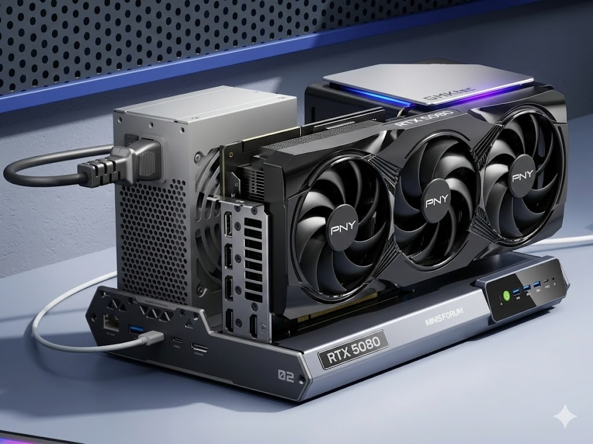

PERSONAL COMPUTE INVENTORYREVIEWED 2026.09
My hardware, managed by real,
schedulable compute.
Two active nodes assigned to their best-fit roles. RTX 5080 reserved for interactive and heavy GPU workloads; RTX 3060 handles background tasks, CI, and batch jobs.
01Capacity reflects separate installed totals and cannot be combined across machines.

01 / ACTIVE COMPUTE POOL
Two Production-Ready Compute Nodes
Capability over model numbers. The primary node handles low-latency, GPU-heavy tasks; the background node absorbs schedulable workloads to prevent bottlenecks.
Loading compute nodes…
02 / ALLOCATION & EXCLUSION LEDGER
Preserve Device Records, Clarify Allocation Boundaries
Transferred or heat-constrained devices stay in the historical ledger, but are excluded from active pools, redundancy, or capacity calculations.
Loading asset status…
03 / VISUAL WORKSPACE
Displays as Workspaces, Not Desktop Ornaments
From a 49-inch DQHD timeline to a 32-inch high-refresh KVM panel, each display serves distinct density and control requirements.
WORKSPACE & SIGNAL TOPOLOGY
Dual-Host Display Routing & KVM Control Matrix
Dedicated display pipelines for ultra-wide timeline density and living room QA, connected through a hardware KVM hub for seamless peripheral sharing.
Loading workspace topology…
Loading displays…
04 / CONTROL SURFACES
Compact, Trackable Input and Audio
Supporting peripherals maintain high traceability through clear categories, use cases, and imagery without visual clutter.
Loading peripherals…
05 / POWER LAYER
Power Stations & Chargers
Loading power equipment…
EVIDENCE NOTE
Specs, Roles, and Measurements Stated Separately
This page is a Hardware snapshot, not real-time telemetry. Models and installed capacities reflect the asset registry; recommended workloads describe scheduling roles; omitted benchmarks are never implied.
Inventory reviewed